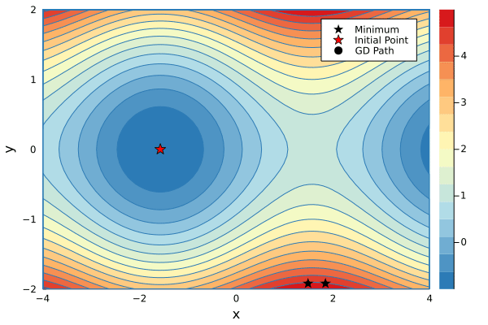

Lab 08 - Reverse Mode Differentiation

In the lecture you have seen how to implement forward-mode automatic differentiation (AD). Assume you want to find the derivative $\frac{df}{dx}$ of the function $f:\mathbb R^2 \rightarrow \mathbb R$
f(x,y) = x*y + sin(x)If we have rules for *, +, and sin we could simply seed the function with Dual(x,one(x)) and read out the derivative $\frac{df}{dx}$ from the Dual that is returned by f. If we are also interested in the derivative $\frac{df}{dy}$ we will have to run f again, this time seeding the second argument with Dual(y,one(y)). Hence, we have to evaluate f twice if we want derivatives w.r.t to both its arguments which means that forward differentiation scales as $O(N)$ where $N$ is the number of inputs to f.
dfdx = f(Dual(x,one(x)), Dual(y,zero(y)))
dfdy = f(Dual(x,zero(x)), Dual(y,one(y)))Reverse-mode AD can compute gradients of functions with many inputs and one output in one go. This is great because very often we want to optimize loss functions which are exactly that: Functions with many input variables and one loss output.
Reverse Mode AD
With functions $f:\mathbb R^N\rightarrow\mathbb R^M$ and $g:\mathbb R^L\rightarrow \mathbb R^N$ with an input vector $\bm x$ we can define the composition of $f$ and $g$ as
\[\bm z = (f \circ g)(\bm x), \qquad \text{where} \qquad \bm y=g(\bm x), \qquad \bm z = f(\bm y).\]
The multivariate chainrule reads
\[\left.\frac{\partial z_i}{\partial x_j}\right|_{\bm x} = \sum_{k=1}^N \left.\frac{\partial z_i}{\partial y_k}\right|_{\bm y} \left.\frac{\partial y_k}{\partial x_i}\right|_{\bm x}\]
If you want to read about where this comes from you can check here or here. It is essentially one row of the Jacobian matrix $J$. Note that in order to compute the derivative we always have to know the input to the respective function, because we can only compute the derivative at a specific point (denoted by the $|_x$ $_{}$ notation). For our example
\[z = f(x,y) = xy + \sin(x)\]
with the sub-functions $g(x,y)=xy$ and $h(x)=\sin(x)$ we get
\[\left.{\frac {df}{dx}}\right|_{x,y} = \left.{\frac {df}{dg}}\right|_{g(x,y)}\cdot \left.{\frac {dg}{dx}}\right|_{x,y} + \left.{\frac {df}{dh}}\right|_{h(x)}\cdot \left.{\frac {dh}{dx}}\right|_{x} = 1 \cdot y |_{y} + 1\cdot\cos(x)|_{x}.\]
You can see that, in order to implement reverse-mode AD we have to trace and remember all inputs to our intermediate functions during the forward pass such that we can compute their gradients during the backward pass. The simplest way of doing this is by dynamically building a computation graph which tracks how each input variable affects its output variables. The graph below represents the computation of our function f.
z = x*y + sin(x)
# as a Wengert list # Partial derivatives
a = x*y # da/dx = y; da/dy = x
b = sin(x) # db/dx = cos(x)
z = a + b # dz/da = 1; dz/db = 1
In the graph you can see that the variable x can directly affect b and a. Hence, x has two children a and b. During the forward pass we build the graph, keeping track of which input affects which output. Additionally we include the corresponding local derivatives (which we can already compute). To implement a dynamically built graph we can introduce a new number type TrackedReal which has three fields:
datacontains the value of this node in the computation graph as obtained in the forward pass.gradis initialized tonothingand will later hold the accumulated gradients (the sum in the multivariate chain rule)childrenis aDictthat keeps track which output variables are affected by the current node and also stores the corresponding local derivatives $\frac{\partial f}{\partial g_k}$.
mutable struct TrackedReal{T<:Real}
data::T
grad::Union{Nothing,T}
children::Dict
# this field is only need for printing the graph. you can safely remove it.
name::String
end
track(x::Real,name="") = TrackedReal(x,nothing,Dict(),name)
function Base.show(io::IO, x::TrackedReal)
t = isempty(x.name) ? "(tracked)" : "(tracked $(x.name))"
print(io, "$(x.data) $t")
endThe backward pass is nothing more than the application of the chainrule. To compute the derivative. Assuming we know how to compute the local derivatives $\frac{\partial f}{\partial g_k}$ for simple functions such as +, *, and sin, we can write a simple function that implements the gradient accumulation from above via the chainrule
\[\left.\frac{\partial f}{\partial x_i}\right|_{\bm x} = \sum_{k=1}^N \left.\frac{\partial f}{\partial g_k}\right|_{\bm g(\bm x)} \left.\frac{\partial g_k}{\partial x_i}\right|_{\bm x}.\]
We just have to loop over all children, collect the local derivatives, and recurse:
function accum!(x::TrackedReal)
if isnothing(x.grad)
x.grad = sum(w*accum!(v) for (v,w) in x.children)
end
x.grad
endwhere w corresponds to $\frac{\partial f}{\partial g_k}$ and accum!(v) corresponds to $\frac{\partial g_k}{\partial x_i}$. At this point we have already implemented the core functionality of our first reverse-mode AD! The only thing left to do is implement the reverse rules for basic functions. Via recursion the chainrule is applied until we arrive at the final output z. This final output has to be seeded (just like with forward-mode) with $\frac{\partial z}{\partial z}=1$.
Writing Reverse Rules
Lets start by overloading the three functions +, *, and sin that we need to build our computation graph. First, we have to track the forward computation and then we register the output z as a child of its inputs by using z as a key in the dictionary of children. The corresponding value holds the derivatives, in the case of multiplication case we simply have
\[z = a \cdot b\]
for which the derivatives are
\[\frac{\partial z}{\partial a}=b, \qquad \frac{\partial z}{\partial b}=a.\]
Knowing the derivatives of * at a given point we can write our reverse rule
function Base.:*(a::TrackedReal, b::TrackedReal)
z = track(a.data * b.data, "*")
a.children[z] = b.data # dz/da=b
b.children[z] = a.data # dz/db=a
z
endCreating two tracked numbers and adding them results in
julia> x = track(2.0)2.0 (tracked)julia> y = track(3.0)3.0 (tracked)julia> z = x*y6.0 (tracked *)julia> x.childrenDict{Any, Any} with 1 entry: 6.0 (tracked *) => 3.0julia> y.childrenDict{Any, Any} with 1 entry: 6.0 (tracked *) => 2.0
Implement the two remaining rules for + and sin by overloading the appropriate methods like we did for *. First you have to compute the tracked forward pass, and then register the local derivatives in the children of your input variables. Remember to return the tracked result of the forward pass in the end.
Solution:
function Base.:+(a::TrackedReal{T}, b::TrackedReal{T}) where T
z = track(a.data + b.data, "+")
a.children[z] = one(T)
b.children[z] = one(T)
z
end
function Base.sin(x::TrackedReal)
z = track(sin(x.data), "sin")
x.children[z] = cos(x.data)
z
endForward & Backward Pass
To visualize that with reverse-mode AD we really do save computation we can visualize the computation graph at different stages. We start with the forward pass and keep observing x
julia> x = track(2.0,"x");julia> y = track(3.0,"y");julia> a = x*y;julia> print_tree(x)x data: 2.0 grad: nothing └─ * data: 6.0 grad: nothing
We can see that we x now has one child a which has the value 2.0*3.0==6.0. All the gradients are still nothing. Computing another value that depends on x will add another child.
julia> b = sin(x)0.9092974268256817 (tracked sin)julia> print_tree(x)x data: 2.0 grad: nothing ├─ sin data: 0.91 grad: nothing └─ * data: 6.0 grad: nothing
In the final step we compute z which does not mutate the children of x because it does not depend directly on it. The result z is added as a child to both a and b.
julia> z = a + b6.909297426825682 (tracked +)julia> print_tree(x)x data: 2.0 grad: nothing ├─ sin data: 0.91 grad: nothing │ └─ + data: 6.91 grad: nothing └─ * data: 6.0 grad: nothing └─ + data: 6.91 grad: nothing
For the backward pass we have to seed the initial gradient value of z and call accum! on the variable that we are interested in.
julia> z.grad = 1.01.0julia> dx = accum!(x)2.5838531634528574julia> dx ≈ y.data + cos(x.data)true
By accumulating the gradients for x, the gradients in the sub-tree connected to x will be evaluated. The parts of the tree that are only connected to y stay untouched.
julia> print_tree(x)x data: 2.0 grad: 2.5838531634528574 ├─ sin data: 0.91 grad: 1.0 │ └─ + data: 6.91 grad: 1.0 └─ * data: 6.0 grad: 1.0 └─ + data: 6.91 grad: 1.0julia> print_tree(y)y data: 3.0 grad: nothing └─ * data: 6.0 grad: 1.0 └─ + data: 6.91 grad: 1.0
If we now accumulate the gradients over y we re-use the gradients that are already computed. In larger computations this will save us a lot of effort!
This also means that we have to re-build the graph for every new set of inputs!
Optimizing 2D Functions
Implement a function gradient(f, args::Real...) which takes a function f and its corresponding arguments (as Real numbers) and outputs the corresponding gradients
Solution:
function gradient(f, args::Real...)
ts = track.(args)
y = f(ts...)
y.grad = 1.0
accum!.(ts)
endjulia> f(x,y) = x*y + sin(x)f (generic function with 1 method)julia> gradient(f, 2.0, 3.0)(2.5838531634528574, 2.0)
As an example we can find a local minimum of the function g (slightly modified to show you that we can now actually do automatic differentiation).
g(x,y) = y*y + sin(x)
using Plots
color_scheme = cgrad(:RdYlBu_5, rev=true)
contour(-4:0.1:4, -2:0.1:2, g, fill=true, c=color_scheme, xlabel="x", ylabel="y")We can find a local minimum of $g$ by starting at an initial point $(x_0,y_0)$ and taking small steps in the opposite direction of the gradient
\[\begin{align} x_{i+1} &= x_i - \lambda \frac{\partial f}{\partial x_i} \\ y_{i+1} &= y_i - \lambda \frac{\partial f}{\partial y_i}, \end{align}\]
where $\lambda$ is the learning rate that has to be tuned manually.
Implement a function descend performs one step of Gradient Descent (GD) on a function f with an arbitrary number of inputs. For GD you also have to specify the learning rate $\lambda$ so the function signature should look like this
descend(f::Function, λ::Real, args::Real...)Solution:
function descend(f::Function, λ::Real, args::Real...)
Δargs = gradient(f, args...)
args .- λ .* Δargs
endRunning one descend step should result in two new inputs with a smaller output for g
julia> g(1.0, 1.0)1.8414709848078965julia> (x,y) = descend(g, 0.2, 1.0, 1.0)(0.891939538826372, 0.8)julia> g(x,y)1.4182910542267546
You can minimize a g starting from an initial value. Below is a code snippet that performs a number of descend steps on two different initial points and creates an animation of each step of the GD algorithm.
function minimize(f::Function, args::T...; niters=20, λ=0.01) where T<:Real
paths = ntuple(_->Vector{T}(undef,niters), length(args))
for i in 1:niters
args = descend(f, λ, args...)
@info f(args...)
for j in 1:length(args)
paths[j][i] = args[j]
end
end
paths
end
xs1, ys1 = minimize(g, 1.5, -2.4, λ=0.2, niters=34)
xs2, ys2 = minimize(g, 1.8, -2.4, λ=0.2, niters=16)
p1 = contour(-4:0.1:4, -2:0.1:2, g, fill=true, c=color_scheme, xlabel="x", ylabel="y")
scatter!(p1, [xs1[1]], [ys1[1]], mc=:black, marker=:star, ms=7, label="Minimum")
scatter!(p1, [xs2[1]], [ys2[1]], mc=:black, marker=:star, ms=7, label=false)
scatter!(p1, [-π/2], [0], mc=:red, marker=:star, ms=7, label="Initial Point")
scatter!(p1, xs1[1:1], ys1[1:1], mc=:black, label="GD Path", xlims=(-4,4), ylims=(-2,2))
@gif for i in 1:max(length(xs1), length(xs2))
if i <= length(xs1)
scatter!(p1, xs1[1:i], ys1[1:i], mc=:black, lw=3, xlims=(-4,4), ylims=(-2,2), label=false)
end
if i <= length(xs2)
scatter!(p1, xs2[1:i], ys2[1:i], mc=:black, lw=3, label=false)
end
p1
endAt this point you can move to the homework of this lab. If you want to know how to generalize this simple reverse AD to work with functions that operate on Arrays, feel free to continue with the remaining volutary part of the lab.
Naively Vectorized Reverse AD
A naive solution to use our TrackedReal number type to differentiate functions that operate on vectors is to just use Array{<:TrackedReal}. Unfortunately, this means that we have to replace the fast BLAS matrix operations with our own matrix multiplication methods that know how to deal with TrackedReals. This results in large performance hits and your task during the rest of the lab is to implement a smarter solution to this problem.
using LinearAlgebra
Base.zero(::TrackedReal{T}) where T = TrackedReal(zero(T))
LinearAlgebra.adjoint(x::TrackedReal) = x
track(x::Array) = track.(x)
accum!(xs::Array{<:TrackedReal}) = accum!.(xs)
const VecTracked = AbstractVector{<:TrackedReal}
const MatTracked = AbstractMatrix{<:TrackedReal}
LinearAlgebra.dot(xs::VecTracked, ys::VecTracked) = mapreduce(*, +, xs, ys)
Base.:*(X::MatTracked, y::VecTracked) = map(x->dot(x,y), eachrow(X))
Base.:*(X::MatTracked, Y::MatTracked) = mapreduce(y->X*y, hcat, eachcol(Y))
Base.sum(xs::AbstractArray{<:TrackedReal}) = reduce(+,xs)
function reset!(x::TrackedReal)
x.grad = nothing
reset!.(keys(x.children))
x.children = Dict()
end
X = rand(2,3)
Y = rand(3,2)
function run()
Xv = track(X)
Yv = track(Y)
z = sum(Xv * Yv)
z.grad = 1.0
accum!(Yv)
endrun (generic function with 1 method)julia> using BenchmarkTools
julia> @benchmark run()
BenchmarkTools.Trial: 10000 samples with 1 evaluation.
Range (min … max): 44.838 μs … 8.404 ms ┊ GC (min … max): 0.00% … 98.78%
Time (median): 48.680 μs ┊ GC (median): 0.00%
Time (mean ± σ): 53.048 μs ± 142.403 μs ┊ GC (mean ± σ): 4.61% ± 1.71%
▃▆█▃
▂▁▁▂▂▃▆████▇▅▄▄▄▄▄▅▅▄▄▄▄▃▃▃▃▃▃▃▃▂▂▂▂▂▂▂▂▂▂▂▂▂▂▂▂▂▂▂▂▂▂▂▂▂▂▂▂ ▃
44.8 μs Histogram: frequency by time 66.7 μs <
Memory estimate: 26.95 KiB, allocs estimate: 392.Reverse AD with TrackedArrays
To make use of the much faster BLAS methods we have to implement a custom array type which will offload the heavy matrix multiplications to the normal matrix methods. Start with a fresh REPL and possibly a new file that only contains the definition of our TrackedReal:
mutable struct TrackedReal{T<:Real}
data::T
grad::Union{Nothing,T}
children::Dict
end
track(x::Real) = TrackedReal(x, nothing, Dict())Define a new TrackedArray type which subtypes and AbstractArray{T,N} and contains the three fields: data, grad, and children. Which type should grad have?
Additionally define track(x::Array), and forward size, length, and eltype to x.data (maybe via metaprogrammming? ;).
Solution:
mutable struct TrackedArray{T,N,A<:AbstractArray{T,N}} <: AbstractArray{T,N}
data::A
grad::Union{Nothing,A}
children::Dict
end
track(x::Array) = TrackedArray(x, nothing, Dict())
track(x::Union{TrackedArray,TrackedReal}) = x
for f in [:size, :length, :eltype]
eval(:(Base.$(f)(x::TrackedArray, args...) = $(f)(x.data, args...)))
end
# only needed for hashing in the children dict...
Base.getindex(x::TrackedArray, args...) = getindex(x.data,args...)
# pretty print TrackedArray
Base.show(io::IO, x::TrackedArray) = print(io, "Tracked $(x.data)")
Base.print_array(io::IO, x::TrackedArray) = Base.print_array(io, x.data)Creating a TrackedArray should work like this:
julia> track(rand(2,2))2×2 Main.TrackedArray{Float64, 2, Matrix{Float64}}: 0.522527 0.718882 0.313791 0.245961
function accum!(x::Union{TrackedReal,TrackedArray})
if isnothing(x.grad)
x.grad = sum(λ(accum!(Δ)) for (Δ,λ) in x.children)
end
x.grad
endaccum! (generic function with 1 method)To implement the first rule for * i.e. matrix multiplication we would first have to derive it. In the case of general matrix multiplication (which is a function $(R^{N\times M}, R^{M\times L}) \rightarrow R^{N\times L}$) we are not dealing with simple derivatives anymore, but with a so-called pullback which takes a wobble in the output space $R^{N\times L}$ and returns a wiggle in the input space (either $R^{N\times M}$ or $R^{M\times L}$).
Luckily ChainRules.jl has a nice guide on how to derive array rules, so we will only state the solution for the reverse rule such that you can implement it. They read:
\[\bar A = \bar\Omega B^T, \qquad \bar B = A^T\bar\Omega\]
Where $\bar\Omega$ is the given output wobble, which in the simplest case can be the seeded value of the final node. The crucial problem to note here is that the two rules rely in $\bar\Omega$ being multiplied from different sides. This information would be lost if would just store $B^T$ as the pullback for $A$. Hence we will store our pullbacks as closures:
Ω̄ -> Ω̄ * B'
Ω̄ -> A' * Ω̄Define the pullback for matrix multiplication i.e. Base.:*(A::TrackedArray,B::TrackedArray) by computing the primal and storing the partials as closures.
Solution:
function Base.:*(X::TrackedArray, Y::TrackedArray)
Z = track(X.data * Y.data)
X.children[Z] = Δ -> Δ * Y.data'
Y.children[Z] = Δ -> X.data' * Δ
Z
endjulia> X = rand(2,3) |> track2×3 Main.TrackedArray{Float64, 2, Matrix{Float64}}: 0.865375 0.42931 0.380619 0.823463 0.833136 0.635136julia> Y = rand(3,2) |> track3×2 Main.TrackedArray{Float64, 2, Matrix{Float64}}: 0.13503 0.947074 0.404891 0.700818 0.399567 0.651617julia> Z = X*Y2×2 Main.TrackedArray{Float64, 2, Matrix{Float64}}: 0.442758 1.36846 0.7023 1.77762julia> f = X.children[Z]#3 (generic function with 1 method)julia> Ω̄ = ones(size(Z)...)2×2 Matrix{Float64}: 1.0 1.0 1.0 1.0julia> f(Ω̄)2×3 Matrix{Float64}: 1.0821 1.10571 1.05118 1.0821 1.10571 1.05118julia> Ω̄*Y.data'2×3 Matrix{Float64}: 1.0821 1.10571 1.05118 1.0821 1.10571 1.05118
Implement rules for sum, +, -, and abs2.
Solution:
function Base.sum(x::TrackedArray)
z = track(sum(x.data))
x.children[z] = Δ -> Δ*ones(eltype(x), size(x)...)
z
end
function Base.:+(X::TrackedArray, Y::TrackedArray)
Z = track(X.data + Y.data)
X.children[Z] = Δ -> Δ
Y.children[Z] = Δ -> Δ
Z
end
function Base.:-(X::TrackedArray, Y::TrackedArray)
Z = track(X.data - Y.data)
X.children[Z] = Δ -> Δ
Y.children[Z] = Δ -> -Δ
Z
end
function Base.abs2(x::TrackedArray)
y = track(abs2.(x.data))
x.children[y] = Δ -> Δ .* 2x.data
y
endX = rand(2,3)
Y = rand(3,2)
function run()
Xv = track(X)
Yv = track(Y)
z = sum(Xv * Yv)
z.grad = 1.0
accum!(Yv)
endjulia> using BenchmarkTools
julia> @benchmark run()
BenchmarkTools.Trial: 10000 samples with 6 evaluations.
Range (min … max): 5.797 μs … 1.618 ms ┊ GC (min … max): 0.00% … 98.97%
Time (median): 6.530 μs ┊ GC (median): 0.00%
Time (mean ± σ): 7.163 μs ± 22.609 μs ┊ GC (mean ± σ): 4.42% ± 1.40%
▆█▇▇▇▆▅▄▃▃▂▂▂▁▁ ▁▁ ▂
█████████████████████▇▇▇▆▆▅▅▅▅▆▅▄▅▅▄▁▃▁▁▄▁▃▁▁▁▃▃▄▁▁▁▄▁▃▁▅▄ █
5.8 μs Histogram: log(frequency) by time 15.8 μs <
Memory estimate: 3.08 KiB, allocs estimate: 31.Even for this tiny example we are already 10 times faster than with the naively vectorized approach!
In order to implement a full neural network we need two more rules. One for the non-linearity and one for concatentation of individual training points to a batch.
σ(x::Real) = 1/(1+exp(-x))
σ(x::AbstractArray) = σ.(x)
function σ(x::TrackedArray)
z = track(σ(x.data))
d = z.data
x.children[z] = Δ -> Δ .* d .* (1 .- d)
z
end
function Base.hcat(xs::TrackedArray...)
y = track(hcat(data.(xs)...))
stops = cumsum([size(x,2) for x in xs])
starts = vcat([1], stops[1:end-1] .+ 1)
for (start,stop,x) in zip(starts,stops,xs)
x.children[y] = function (Δ)
δ = if ndims(x) == 1
Δ[:,start]
else
ds = map(_ -> :, size(x)) |> Base.tail |> Base.tail
Δ[:, start:stop, ds...]
end
δ
end
end
y
endYou can see a full implementation of our tracing based AD here and a simple implementation of a Neural Network that can learn an approximation to the function g here. Running the latter script will produce an animation that shows how the network is learning.

This lab is heavily inspired by Rufflewind